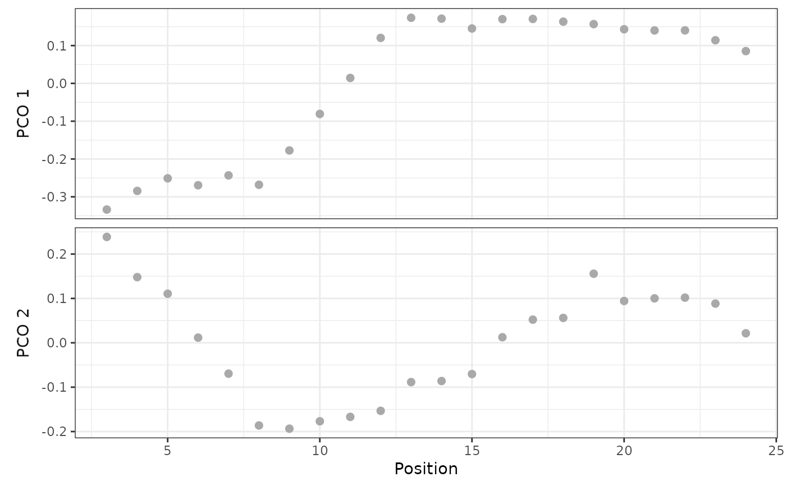
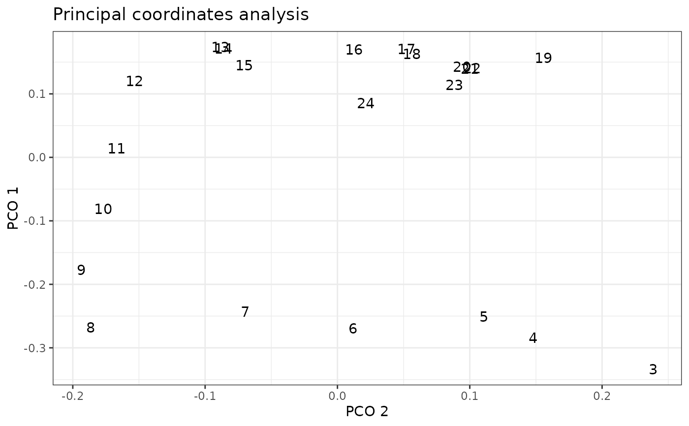

Plot PCO axes
plot.regions_pco.Rdplot() visualizes the relationship between a PCO axis and the vertebra or between pairs of PCO axes.
Usage
# S3 method for class 'regions_pco'
plot(x, pco_y = 1, pco_x = NULL, ...)Arguments
- x
a
regions_pcoobject; the output of a call tosvdPCO().- pco_y, pco_x
number; PCO score indices for the y- and x-axes, respectively.
pco_xcan beNULL.- ...
arguments passed to
ggplot2::geom_text()whenpco_xis notNULL. Ifscoresis supplied as an argument, it will replacepco_yif unspecified.
Details
When pco_x is NULL (the default), plot() will display a scatterplot of the PCO axis identified by pco_y and vertebra position using ggplot2::geom_point(). This plot is similar to that generated by plotsegreg(). Otherwise, plot() uses ggplot2::geom_text() to identify vertebrae positions in the space corresponding to the requested PCOs.
See also
svdPCO() for generating the PCO scores. plot.regions_sim() for plotting PCO scores against vertebra position for simulated PCOs. plotsegreg() for plotting PCO scores against vertebra position after selecting breakpoints for a segmented regression.
Examples
data("alligator")
alligator_data <- process_measurements(alligator,
pos = "Vertebra")
# Compute PCOs
alligator_PCO <- svdPCO(alligator_data,
metric = "gower")
alligator_PCO
#> - Scores:
#> PCO.1 PCO.2 PCO.3 PCO.4 PCO.5 PCO.6 PCO.7 PCO.8 PCO.9
#> 1 -0.334 0.2386 0.03426 -0.10271 -0.04904 -0.04760 -0.03210 -0.0341 -0.00170
#> 2 -0.284 0.1480 -0.02979 -0.01372 0.06610 -0.03238 0.05522 0.0245 0.01972
#> 3 -0.251 0.1106 -0.07088 0.05289 0.04260 -0.02385 -0.03003 0.0160 -0.03045
#> 4 -0.269 0.0116 -0.09275 0.07987 -0.00401 0.00907 0.00464 0.0231 -0.00295
#> 5 -0.243 -0.0695 -0.04831 0.01709 -0.05224 0.06285 -0.02271 0.0222 0.00941
#> 6 -0.268 -0.1863 0.00344 -0.00869 -0.00536 0.06317 -0.02513 -0.0205 0.02758
#> PCO.10 PCO.11 PCO.12 PCO.13 PCO.14 PCO.15 PCO.16 PCO.17
#> 1 0.018670 0.00486 0.000221 0.00457 0.000393 -0.00198 -0.00860 0.000428
#> 2 -0.036114 0.00829 -0.027648 -0.01465 0.004165 -0.00981 0.00182 -0.003757
#> 3 0.000191 -0.02548 0.040047 0.00938 0.009774 0.02548 0.01119 0.007634
#> 4 0.025317 0.01864 0.003402 0.01498 -0.021639 -0.03377 -0.00674 -0.005831
#> 5 0.020205 -0.01407 -0.032932 -0.04248 0.003092 0.01802 -0.00649 0.005655
#> 6 -0.045238 0.02653 0.020049 0.02394 0.007392 0.00588 0.00227 -0.001655
#> PCO.18 PCO.19 PCO.20 PCO.21
#> 1 0.001471 0.00337 -0.001435 0.000816
#> 2 -0.008612 -0.00597 0.001839 0.002614
#> 3 -0.000183 -0.00604 0.002491 -0.002083
#> 4 0.012116 0.01142 -0.002113 -0.001988
#> 5 -0.001655 -0.00516 0.002234 -0.001151
#> 6 -0.011215 0.00492 -0.000682 0.002172
#> (First 6 of 22 rows displayed.)
#>
#> - Eigenvalues:
#> [1] 7.81e-01 3.39e-01 1.59e-01 4.17e-02 2.94e-02 2.73e-02 1.86e-02 1.32e-02
#> [9] 1.29e-02 1.17e-02 8.97e-03 8.39e-03 7.81e-03 6.20e-03 5.88e-03 2.85e-03
#> [17] 2.12e-03 2.00e-03 1.38e-03 9.43e-04 3.79e-04 8.08e-17
# Plot PCOs against vertebra index
plot(alligator_PCO, pco_y = 1:2)

# Plot PCOs against each other
plot(alligator_PCO, pco_y = 1, pco_x = 2)
